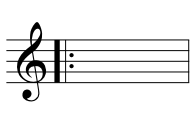
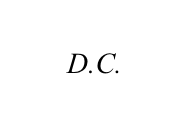
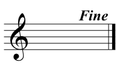
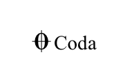

Principles of Form
Form is the large-scale organization or shape of a piece of music. Formal structure helps listeners to perceive a piece as logical or coherent. Form is shaped by repeating material, varying familiar material, and introducing contrasting material.
To see these principles at work, visit Form Archetypes, Form in Popular Music, and Form in Art Music.
Repetition
When we describe a piece as 'catchy', we are really saying that it is easy to remember. Repetition is what allows sections of music to become familiar and fixed in our memories in that way. Repetition is also used in long pieces to maintain a sense of coherence and unity.
Although any element of music can be repeated (a note, a rhythm, a harmony, etc.), formal repetition refers to the recurrence of entire sections. In notation, these repeats are often indicated by a double barline and two dots. These are called repeat signs. Repeat signs often appear with first and second endings, which provide alternate measures of music for the first and second time a section is played.
| Notation | Name | Meaning |
 |
Backward repeat sign | At the end of this measure, go back to the beginning or to the nearest preceding forward repeat sign. |
|  | Forward repeat sign | Matches up with a backward repeat sign to denote the measures to be repeated. When you reach a backward repeat sign, go back to the forward repeat sign and play all the measures between the two signs a second time. |
 |
First ending | The measures underneath the bracket should be played on the first time through a section, but should be skipped on the second pass. |
 |
Second ending | On the second time through a section, when the first ending is skipped, these measures should be played instead. Second endings will always follow first endings with repeat signs (see above). |
There are also several other words and symbols that are used to indicate the order in which sections should be played and repeated. The chart below shows these symbols along with their names and meanings.
| Notation | Name | Meaning |
|  | Da capo | Literally, 'from the head', this indication means to return to the beginning and play everything again. |
|  | Fine | Literally, 'end', this symbol is used when the form of a piece is made complex by repetition, and the end of the piece falls at the end of an internal section rather than at the end of the notated measures. Fine is often used together with da capo (see below). |
 |
Da capo al fine | Literally, 'from the head to the end', this is used when the composer wants the beginning of a piece to be repeated, but does not want the whole thing to be heard again. The performer should return to the beginning and play up until fine appears in the music (see above). |
|  | Coda | From the Italian for 'tail', a coda is an extra section added at the end of a piece. Typically, the symbol to the left is used in the main body of the piece to indicate when the performer should jump from the main body to the coda. By convention, the performer never skips to the coda on the first time through a section, but only after a repeat has occurred. The coda itself is marked with either 'coda' or both the symbol and the word. |
 |
Segno | Meaning 'sign' in Italian, the segno is used to mark where a repetition should begin. This is used only when the form is too complex for a forward repeat sign to be used. |
 |
Dal segno al Coda | Literally 'from the sign to the coda', this indicates that the player should go to the segno, play to the coda symbol, then go to the coda and play it as well. |
Contrast
In music, contrast is used to create variety and build drama and tension. By withholding familiar material and using contrasting music instead, the composer can create discomfort, longing, or disorientation in an audience. In longer pieces, repetition helps create cohesion, but alone it is not enough to hold the attention of an audience. Contrast is introduced into these pieces to maintain interest and spread out repetition. Drama can also be achieved through the use of contrasting material. Following a quiet section with a loud one, or a slow section with a fast one can surprise and disorient audiences, while following a lifeless section with a triumphant one can invigorate them.
Variation
Variation is essentially a combination of the principles of repetition and contrast. Variation occurs when a section returns, but is not identical to its previous iteration(s). Some aspects of the section remain the same so that it is (usually) recognizable, but others are changed to create variety. Thus variation allows for both the familiarity of repetition and the interest of contrast.